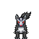
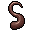
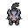

Pokédex / #262

Mightyena #262
Dark
It will always obey the commands of a skilled Trainer. Its behavior arises from its living in packs in ancient times.
Generation 3 · Hoenn

Stats
| Attack | 90 | |
|---|---|---|
| Defense | 70 | |
| Sp. Atk | 60 | |
| Sp. Def | 60 |
In the wild
| Wild level | 40–50 |
|---|---|
| HP | 70 |
| Experience | 10 |
| Egg groups | Field |
Evolution
- Evolves from Poochyena at level 35.
Moves
| Level | Move | Type | Category | Power | Energy | Cooldown | Effect | |
|---|---|---|---|---|---|---|---|---|
| 1 | Tackle | Normal | Physical | 15 | 15 | 1s | Tackle is one of the most common and basic moves a Pokemon learns. It deals damage with no additional effects. | |
| 5 | Bite | Dark | Physical | 60 | 60 | 9s | Bite deals damage and has a 30% chance of causing the target to flinch. | |
| 10 | Assurance | Dark | Physical | 60 | 70 | 13s | Assurance does damage and has no secondary effect. | |
| 15 | Take Down | Normal | Physical | 90 | 90 | 14s | Take Down deals damage and has no secondary effect. | |
| 20 | Sand-Attack | Ground | Status | – | 25 | 10s | Sand-Attack lowers the target's Accuracy by one stage. | |
| 25 | Crunch | Dark | Physical | 80 | 80 | 12s | Crunch deals damage and has a 20% chance of lowering the target's Defense by one stage. | |
| 30 | Yawn | Normal | Status | – | 100 | 95s | In the turn that Yawn is used, the only effect will be the user yawning at the target. At the end of the next turn, the target (if still active) will fall asleep unless it gets affected by a major status condition in the meantime, a status-protecting move is used (like Safeguard or Uproar), or the battle ends. | |
| 40 | Sucker Punch | Dark | Physical | 80 | 80 | 12s | Sucker Punch deals damage and has no secondary effect. | |
| 45 | Scary Face | Normal | Status | 1 | 40 | 15s | Scary Face lowers the target's Speed by two stages. | |
| 50 | Play Rough | Fairy | Physical | 90 | 90 | 15s | The user plays rough with the target and attacks it. This may also lower the target's Attack stat. | |
| 55 | Shadow Ball | Ghost | Special | 80 | 80 | 12s | Shadow Ball deals damage and has a 20% chance of lowering the target's Special Defense by one stage. | |
| 60 | Payback | – | Physical | – | 100 | 90s | Any move is reflected back to the attacker. | |
| 65 | Giga Impact | Normal | Physical | 150 | 160 | 34s | Giga Impact deals damage but the user can't attack on the next turn. |
Field abilities
Rock SmashStrengthRideFind
Special abilities
Quick FeetIntimidate
Egg moves
AstonishCovetFire FangIce FangMe FirstPoison FangThunder FangYawn
Technical machines
Double TeamHyper BeamProtectRain DanceRestRoarShadow BallSubstituteTauntToxic
Drops
| Item | Amount | Chance | |
|---|---|---|---|
| black orb | 1 | 43.8% | |
| night orb | 1 | 14.6% | |
| hard claws | 1 | 10.9% | |
| cutting fang | 1 | 8.75% | |
 | bright hair | 1 | 8.75% |
| dark claws | 1 | 7.29% | |
| onigiri | 1–5 | 5% | |
| dark crystal | 1 | 4.38% | |
| astral source | 1 | 4.38% | |
 | mightyena doll | 1 | 0.1% |
| Dread Plate | 1 | 0.05% | |
| held black glasses | 1 | 0.02% |